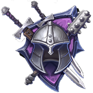
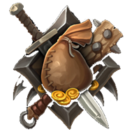
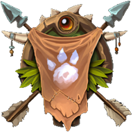

Uno sguardo alla partita
Cosa ci trovi
Nove classi
Ognuna con la sua abilita e il suo modo di rompere il piano dell'avversario. Si sbloccano al Santuario, una alla volta.







Una campagna in sette capitoli
Stanze, mostri, miniboss e un boss che chiude ogni capitolo. Fra una run e l'altra ci sono taverna, negozio e santuario.
Duelli online
Partite classificate con tier, divisioni e stagioni. La Hall of Fame tiene il conto di chi ha chiuso ogni stagione in testa.
Il regolamento, per intero
Famiglie, scala del Vigore, aure e database delle carte: e' tutto scritto, niente e' nascosto dietro una schermata di aiuto.
Si comincia da qui
Nessun account obbligatorio per provare. Se poi vuoi che i progressi ti seguano fra telefono e browser, ti basta accedere con Google.